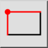

Rektangel med størrelse
Verktøylinje/ikon:


Meny: Uavgjort > Form > Rektangel med størrelse
Snarvei: R, S
Kommandoer: rectanglesize | linerectanglesize | rs
Dette er en automatisk oversettelse.
Verktøylinje/ikon:


Bruk dette verktøyet til å opprette rektangulære former med en angitt størrelse.